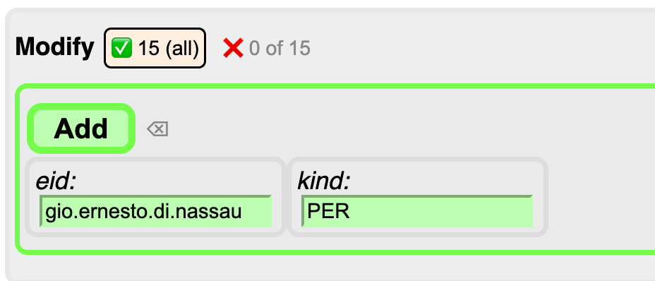
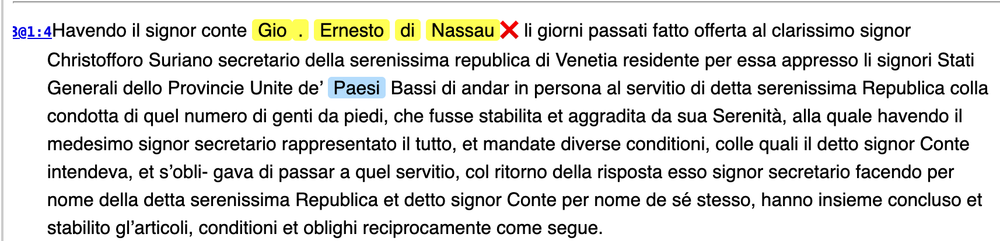
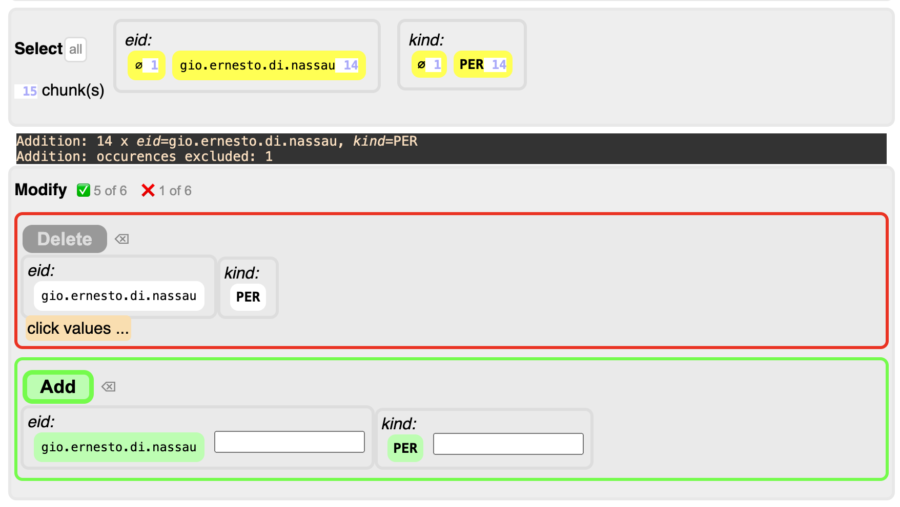

Module tf.about.annotateBrowser
Annotate tool in TF Browser
We explain the manual annotation process with a leading example:
HuygensING/suriano.
Prerequisites
- Python must be installed;
- You must know how to start up a terminal (macos or linux) or command prompt (windows);
-
TF must be installed: in a terminal or command prompt say
pip install text-fabricOn some systems you have to say
pip3instead ofpip. If by chance you already have an older version of TF, saypip install --upgrade text-fabric
Start up
Start a terminal or command prompt. You need not go to a specific directory. Give the command
tf HuygensING/suriano --tool=ner --chrome
The tool opens in a new window in the Chrome browser.
Currently the tool works best in Chrome, but it is not required.
If you leave out the --chrome bit, the tool starts in your default browser.
You can restart the tool without navigating away from the web page as follows:
tf HuygensING/suriano --tool=ner --chrome -noweb
Because of -noweb it will not open a new browser window and you can continue in the
already open browser tab.
The start-up window looks like this:

-
Left column:
Manage annotation sets. Your work ends up in an annotation set. Here you can choose in which set.
You can create a new, empty set or duplicate an existing set. You can also rename a set or delete it.
There is one special set, here it is called
ent-nodes. These are the entities that are already in the corpus. This is a read-only set. You can inspect it, but you cannot add annotations or modify its annotations.However, you can duplicate this set, and the copy can be modified. So, if the existing set is a good one, requiring only a few tweaks, this is a good way to start.
-
Entities column:
See the entities in the chosen set.
At the top you see an overview of the kinds of entities and how many entities there are of each kind.
At the bottom is the list of all entities, which you can filter and sort by the controls in between.
You can click on each entity. Let's click on
Francia:
On the right you see all occurrences of this entity, highlighted.
-
Right column:
See a list of buckets (i.e. paragraphs in this corpus).
If you have clicked on an entity, you see the buckets that contain an occurrence of that entity.
If you have not clicked on anything, you see the whole corpus, truncated to the first 100 buckets.
We got here by clicking on an entity. If we click the ❌ next to the entity on top, we reset the viewer.
From this point, we can do a succession of steps.
Annotation workflow
Viewing text
We focus on the right column in the initial view, without anything highlighted.
On top you see a section Appearance with a button plain.
Click that button. It changes to decorated plus a row of buttons next to it.
Below, in the text, you see that something has changed:

- every occurrence of an entity in the set is now underlined;
- the whole entity is wrapped between
|with a little number indicating how many tokens the occurrence has. - right before each occurrence there is a small number: it indicates how many occurrences there are of that entity;
- reading to the right, you see
LOCorPERorMISC: the kind of the entity; - further to the right you see the identifier of the entity; if you click on the identifier, you load all of its occurrences, to the same effect as when you had it clicked it from the Entities column.
- you can hide these pieces of information selectively, by clicking in the
row of buttons above (
eid,kind,stats,underlining).
Click an identifier in order to load all its occurrences, e.g. ernesto.di.nassau.
If you need more context around an occurrence, click the blue section indicator
at the left of the relevant paragraph.
You will get a scrollable view of the whole section (letter) in which that paragraph occurs.

The paragraph you started from is in the center. You can scroll up and down the whole letter that the paragraph is contained in. If you want to return to the paragraph you started from, click the blue dot. If you want to remove the context, click the blue section indicator again.
Finding occurrences
Suppose you want to find occurrences of Gio. Erneso di Nassau and mark them all
as named entities with the same identifier. You can achieve that in the following
steps:
-
Make a new set
First of all you should create a set where your new annotations will end up. In the right column, click the
+button and enter a name for the new set, e.g.test. -
Filter step
In the filter box, type
ernestoand then click the 🔎 button. The text view now shows only the paragraphs withernestoin it, and it shows all of them in the whole corpus. -
Mark step
Now click the word
Gioand then click the subsequentNassau, both aroundErnesto. The whole stretchGio. Ernesto di Nassaubecomes yellow highlighted. Above the text you see a new control section, titled Mark:
Click the ✅ button that you see there.
The text below will contain all paragraphs in which the string
Gio. Ernesto di Nassauoccurs, with all those occurrences highlighted. There are 15 of them.Moreover two more control sections will show up.
-
Select step
The yellow occurrences might be instances of other entities. If so, the select step shows you the identifiers and kinds of those entities. You may select values here in order to restrict the modification actions in the next step to these cases.

You also see the values
⌀: they select occurrences that are not instances of any entity in the currently developed set. Since we just started with an empty set, these are the only values that you can select, and the app has already selected them for you. -
Modify step
Now you can act on the selected occurrences. There are two possible actions: add entities for these occurrences or delete existing entities for these occurrences. Since our set of entities is still empty, we can only add.

You have to tell the annotator the values for the entity identifier and kind that you will assign. The tool has already prefilled sensible values for you, but you can change them.
Before you click
add, click on the ✅ button after the first occurrence. That will deselect this occurrence from theaddoperation. More about that below.The result looks like this:

(the first occurrence is unaffected)

(new entity markings show up!).
Also the control sections look different now:

Note the lines with the black background: they report the result of the previous action.
The select control now shows additional values under the selected occurrences: the identifier and kind of the entity markings we have just added.
The modify control shows the
deleteaction: we can remove the entities we just added.In order to do so, we have to click on the values that we want to delete, and then press the delete button. If we do that, we have effectively undone the previous addition.
Using a succession of these steps, it is possible to assign entity information to many occurrences using only a few steps.
But it is not always enough to crudely assign entities to all occurrences of a pattern. And sometimes you want to modify existing entities, and give them a different kind, but not all of them. For those reasons, there is a bit more sophistication built into the tool.
Sophistication
Filter step
There is a button with or without, which changes to with and without.
This enables you to filter the paragraphs that contain entities, or the paragraphs
that do not contain entities.
Mark step
There is a button all that changes to free and intersecting.
This enables you to mark only occurrences that do not overlap with existing entities,
or occurrences that do overlap with existing entities.
Select step
There is a button all. If you click on it, it changes
to filtered, and you see the totals as 15 of 15 instead of 15.

What does this mean?
You can work with the filtered paragraphs only (the ones that contain the word
ernesto, marked as blue), or you can work with all paragraphs, including the ones
that are not in the filtered view.
In this case, both options coincide, because the filter pattern ernesto is also
part of the entity pattern Gio. Ernesto di Nassau.
If you replace ernesto by paesi in the filter, you'll see this:

Now you see that when you choose filtered, you act on 6 occurrences, instead
of all 15.
Modify step
Before you click the add or delete buttons, you can fine tune things, by further
selecting or deselecting specific occurrences that should be affected.
All occurrences of the candidate entity that are shown in the paragraphs below
have a ✅ button after them. If you click it, it turns into a ❌ button,
and the occurrence becomes deselected. The add operation will forego this
occurrence and leave it unaffected.
You can also select or deselect all occurrences in one go.
N.B.
If you have filtered the paragraphs, and under select you have chosen to work with
all results, selecting and deselecting only work for the occurrences in the filtered paragraphs.
The other results are not selectable or deselectable, and will all be
affected.
Several surface forms for one entity
If you have added an entity, and you mark another one, you'll see a new button next to
the ✅, namely ❎. It has mostly the same effect, namely marking all occurrences
in the corpus, but the differences are in what happens below the add button.
Whereas the ✅ button fills the eid field with a value derived from the occurrence,
the ❎ leaves the previous value unchanged. So you can just click add to mark
the new occurrences with the values of the same entity as before.
Programming
The workflow sketched above works fine if you know what to look for, and if there are not too many distinct named entities in the corpus.
Probably you soon discover that there are quite a bit of distinct named entities, and each entity has quite a bit of surface forms. Then the work load may not feel doable any more.
For that purpose, there is also a way of annotating-by-programming, where you run the annotator tool in a Jupyter Notebook, driven by a spreadsheet with names and surface forms.
See tf.browser.ner.ner.
You can then still use this tool after the fact to check the entity assignments and make fine-tuning corrections.
Expand source code Browse git
"""
.. include:: ../docs/about/annotateBrowser.md
"""